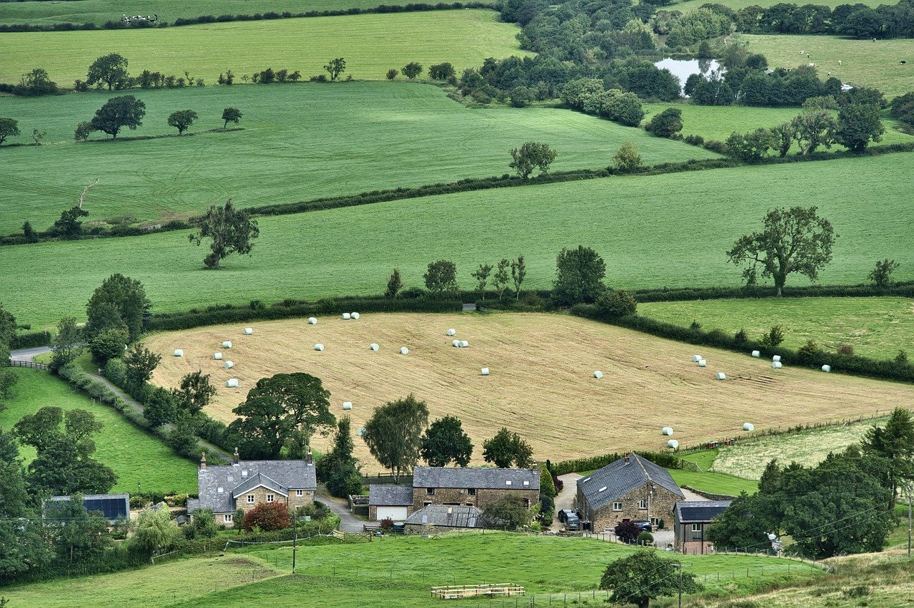

Regularização Ambiental Rural, CAR e PRA
A regularização ambiental de propriedades rurais é importante
para atender às exigências da legislação ambiental e contribuir
para a gestão sustentável das atividades agropecuárias.
O Cadastro Ambiental Rural (CAR), as áreas de preservação
permanente (APP), a reserva legal e o Programa de Regularização
Ambiental (PRA) fazem parte dos instrumentos de gestão e
regularização previstos na legislação brasileira.
A Império Ambiental oferece assessoria técnica para produtores
e proprietários rurais que necessitam de orientação sobre
cadastro, adequação ambiental, recuperação de áreas e
licenciamento de atividades rurais.
Com sede em Cornélio Procópio, atendemos propriedades no
Norte do Paraná e avaliamos demandas de outras regiões.
Serviços Ambientais Rurais
Materiais Institucionais
Precisa Regularizar sua Propriedade?
Entre em contato para apresentar sua necessidade e conhecer nossos serviços de consultoria ambiental rural.
(43) 9 2001-1726

Consultoria Ambiental para Propriedades Rurais
Conheça os principais serviços relacionados à adequação e regularização ambiental de imóveis e atividades rurais.
Cadastro Ambiental Rural (CAR)
O Cadastro Ambiental Rural é um registro eletrônico obrigatório para imóveis rurais, utilizado para integrar informações ambientais das propriedades, incluindo áreas de preservação permanente, reserva legal, remanescentes de vegetação nativa e áreas consolidadas. A Império Ambiental oferece assessoria técnica para elaboração, atualização e retificação do CAR, conforme as necessidades e a situação cadastral de cada imóvel.
Programa de Regularização Ambiental (PRA)
O Programa de Regularização Ambiental reúne instrumentos voltados à adequação de imóveis rurais às exigências ambientais previstas na legislação. Prestamos orientação técnica relacionada à regularização ambiental e às medidas aplicáveis à situação de cada propriedade, conforme as regras e os procedimentos vigentes.
Licenciamento e Autorizações Rurais
Determinadas atividades agropecuárias e intervenções em propriedades rurais podem depender de licenciamento ou autorização ambiental. Oferecemos assessoria para identificação das exigências, organização da documentação e acompanhamento técnico dos procedimentos aplicáveis.
Reserva Legal e Áreas de Preservação Permanente (APP)
As áreas de preservação permanente e a reserva legal são instrumentos de proteção da vegetação nativa previstos na legislação ambiental brasileira. Elaboramos e apoiamos projetos de recomposição ambiental, considerando as características da propriedade, as exigências legais e as necessidades de recuperação das áreas identificadas.
Outorgas de Uso de Recursos Hídricos
O uso de recursos hídricos em atividades rurais, como captação para irrigação e outras finalidades, pode exigir outorga ou outro procedimento junto ao órgão gestor competente. Prestamos assessoria técnica para orientação e regularização do uso da água, conforme a legislação aplicável.
Assessoria e Gestão Ambiental Rural
Auxiliamos produtores e proprietários na identificação de demandas ambientais, organização de documentos e planejamento de medidas de adequação. O objetivo é oferecer suporte técnico para a gestão ambiental da propriedade e para o atendimento das obrigações pertinentes.
Precisa de Assessoria para CAR, PRA ou Regularização Rural?
Entre em contato com a Império Ambiental e apresente as necessidades da sua propriedade.
Falar com um Consultor